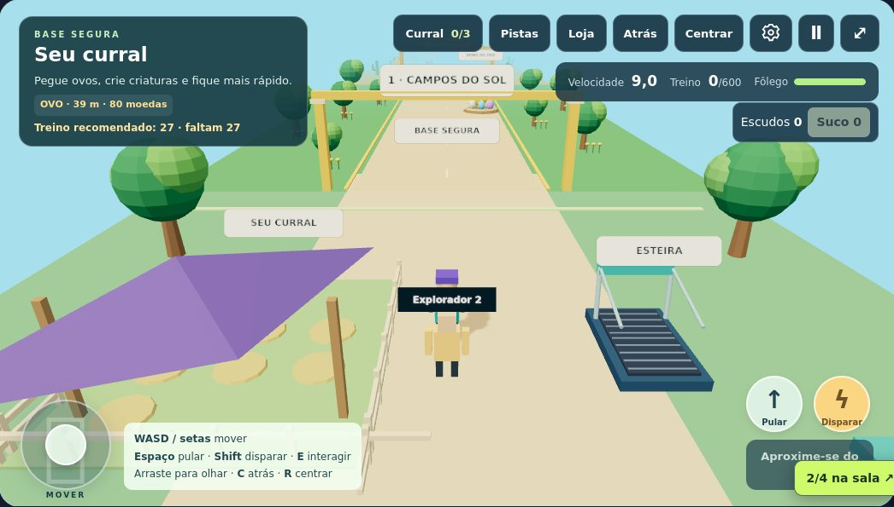

NOVO · CORRIDA EM 3D
Integro Rush
Quinze expedições por ilhas, ruínas, neve, vulcões e céus. Pule, deslize, colete moedas e personalize seu explorador com 24 acessórios.
Encontrar no catálogo ↗
PEQUENAS DESCOBERTAS. GRANDES AVENTURAS.
Explorar, construir, raciocinar e se divertir. Um espaço pensado para brincar com acesso protegido e a família por perto.
Entrar e escolher um jogo ↗Acesso com o login do Portal da Família
01Entrada pela famíliaO responsável utiliza sua conta do portal.
02Encontros nos jogosSalas pequenas e apelidos de explorador.
03Sem chat livreInteração com acenos e comemorações.
UM CATÁLOGO EM EXPANSÃO
Mundos 3D, desafios de matemática, palavras, memória e lógica. Vários jeitos de brincar, no ritmo de cada criança.
Quinze expedições por ilhas, ruínas, neve, vulcões e céus. Pule, deslize, colete moedas e personalize seu explorador com 24 acessórios.
Encontrar no catálogo ↗
Role, pule e explore cinco mundos coloridos. Encontre cristais, use flores de impulso e atravesse plataformas móveis até o portal.
Encontrar no catálogo ↗16 semanas musicais, personagens cartoon e batalhas de ritmo. Desafie alguém no mesmo aparelho com o novo modo versus.
Jogar InterDance ↗
Guie a cobra por 15 fases em arenas 3D. Colete melancias e peras, atravesse túneis e descubra poderes.
Jogar GoSnake ↗
Explore os ambientes, treine seu personagem e descubra novos desafios pelo caminho.
Passeie, cuide da horta e visite diferentes lugares em uma aventura do cotidiano.

Transforme ideias em construções, explore o terreno e invente novas possibilidades.

FuitCort, Torre da Matemática, desafios de palavras, memória, robótica e outras descobertas esperam no menu.
CUIDADO TAMBÉM FAZ PARTE DO JOGO
Um ambiente com acesso pelo responsável, sem anúncios e sem conversas livres entre jogadores. Nas salas, os participantes usam apelidos automáticos, sem exibir nomes, e-mails ou dados dos alunos.
Combine o tempo de tela, faça pausas e acompanhe as primeiras aventuras. Nas salas públicas, outros usuários autenticados podem entrar. Prefira salas privadas por convite para jogar apenas com conhecidos.
Vamos brincar? ↗PARA OS RESPONSÁVEIS
Entre com a conta que você utiliza no Portal da Família. Após o login, o menu do Integro Box será aberto. Quem ainda não tem acesso pode entrar em contato com o Instituto pelo site.
Falar com o Instituto →O InterDance tem versus local para duas pessoas no mesmo aparelho, com WASD, setas ou controles de toque.
O modo multiplayer tem salas públicas e privadas para até quatro contas de família, em Pegue o Ovo, Meu Bairro e IntegroCraft. No botão Salas, escolha o mundo e entre em uma sala pública ou crie a sua. As públicas recebem outros usuários autenticados, inclusive desconhecidos. Para jogar apenas com conhecidos, crie uma sala privada e compartilhe o código. Quem criou pode remover participantes ou encerrar a sala.
No IntegroCraft, o grupo constrói em um mundo temporário da sala. Nos demais jogos, os personagens se encontram enquanto cada um mantém seus próprios desafios e conquistas. Não há chat livre nem chamadas de voz.
Há controles de toque e teclado. Os mundos 3D precisam de um navegador atualizado e de um aparelho compatível com WebGL. O modo com amigos também precisa de conexão com a internet.
O progresso individual fica neste navegador, separado por conta da família. Limpar os dados do navegador ou trocar de aparelho pode removê-lo. As construções multiplayer são temporárias e duram enquanto a sala estiver ativa.